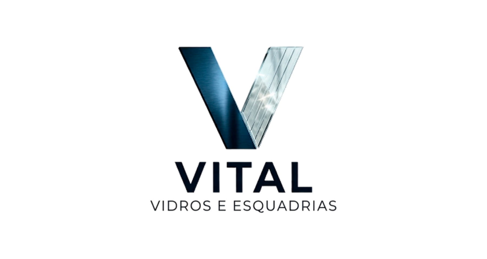
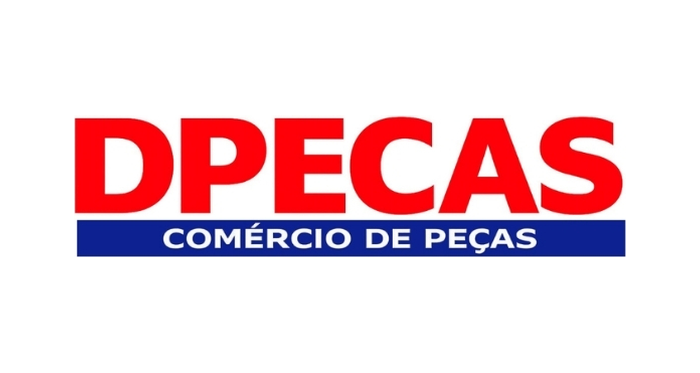
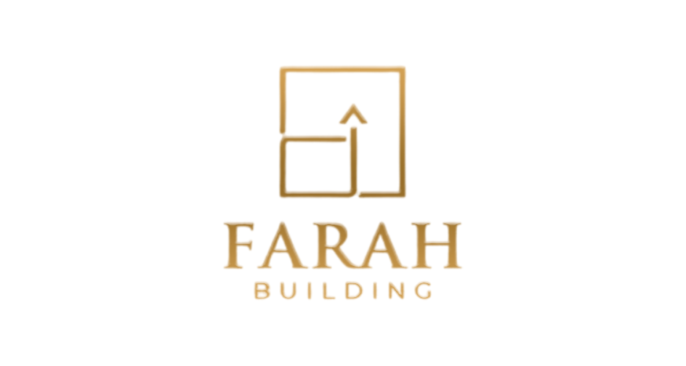
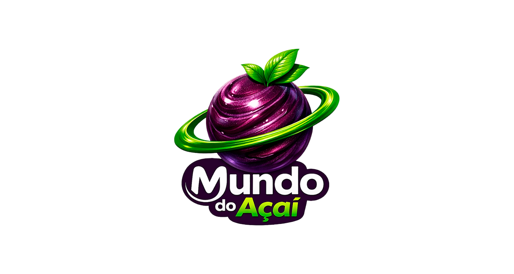
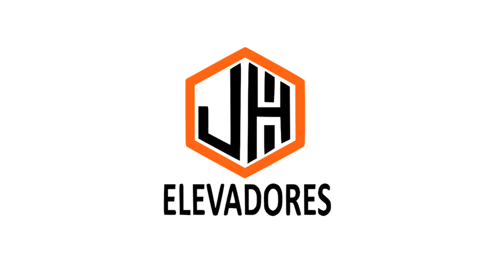

Estratégia antes de escala
Antes de investir mais, organizamos oferta, discurso, público e prioridades para sua operação crescer com base sólida.
A Agência Winc transforma posicionamento, tráfego e conversão em uma operação de crescimento com estratégia clara, criativos fortes, landing pages de alta conversão, automações no WhatsApp e soluções SaaS para ganhar escala.
Crescimento orientado por intenção
Unimos branding, mídia e experiência digital para que cada clique encontre uma mensagem forte, uma oferta clara e um caminho simples para a conversão.
Construir minha nova faseAntes de investir mais, organizamos oferta, discurso, público e prioridades para sua operação crescer com base sólida.
Cada peça precisa chamar atenção, sustentar interesse e conduzir a ação. Não criamos volume sem intenção.
Acompanhamos campanha, página e mensagem como um sistema único para ajustar rápido o que realmente move resultado.
Uma seleção de marcas atendidas em identidade visual, materiais gráficos e presença digital.





Ajustamos narrativa, linguagem e visual para sua marca ocupar um espaço memorável no mercado.
Briefing guiado Preencher briefingPlanejamento de campanhas, distribuição de verba e leitura de dados para escalar com consistência.
Contratar agoraPáginas com argumento certo, experiência fluida e estrutura pronta para captar e converter.
Briefing guiado Preencher briefingCriamos presença, recorrência e relevância para manter sua marca viva na mente do cliente ideal.
Contratar agoraEstruturamos jornadas automáticas para captar, qualificar, responder e reativar contatos com mais velocidade.
Contratar agoraDesenvolvemos plataformas sob medida para vender, operar, atender clientes ou organizar processos internos.
Contratar agoraCriamos fluxos que reduzem demora no atendimento e organizam a comunicação com mais clareza, velocidade e escala.
Se sua empresa precisa de um sistema próprio, portal ou área de gestão, desenvolvemos a solução com foco em uso real.
Entendemos marca, meta e gargalos.
Definimos oferta, canais e prioridade.
Criativos, páginas e campanhas entram no ar.
Medimos, ajustamos e ampliamos o que funciona.
Campanhas com visual forte, promessa clara e consistência para baixar o custo por oportunidade.
Estrutura de copy, prova e CTA para reduzir fricção e elevar a taxa de resposta.
Quando todos os pontos conversam, seu crescimento deixa de ser improviso e vira sistema.
Atendemos marcas locais, negócios digitais e empresas que precisam posicionar melhor sua mensagem, vender com mais clareza, automatizar etapas da operação e construir presença forte no digital.
A Agência Winc pode atuar desde o tráfego até a base da conversão, incluindo posicionamento, criativos, landing pages e ajustes de funil.
Sim. Estruturamos automações para atendimento, qualificação, recuperação de leads, follow-up e organização da conversa com mais eficiência.
Sim. A Agência Winc também cria SaaS e soluções sob medida para empresas que precisam transformar processo em plataforma, produto ou operação digital.
Isso depende do estágio da operação, mas normalmente os primeiros sinais aparecem quando alinhamos oferta, mensagem e campanha logo nos primeiros ciclos de execução e ajuste.
O caminho mais rápido é pelo WhatsApp. Assim conseguimos entender seu cenário, alinhar objetivo e indicar o melhor formato de atuação para a sua empresa.
Clique no botão e fale direto com a equipe pelo WhatsApp.